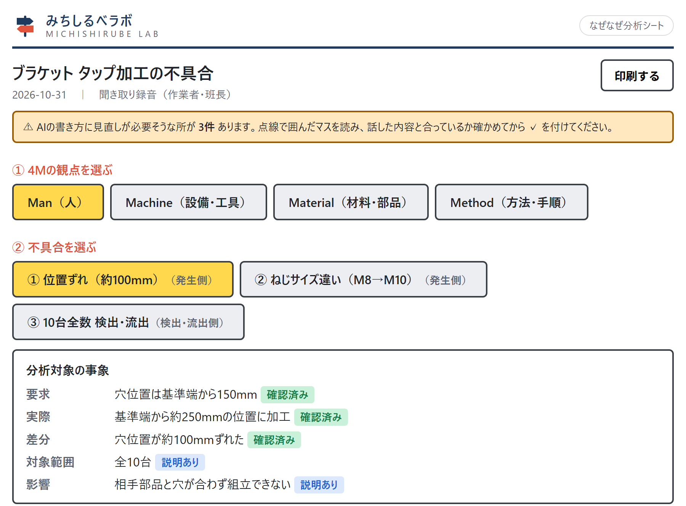
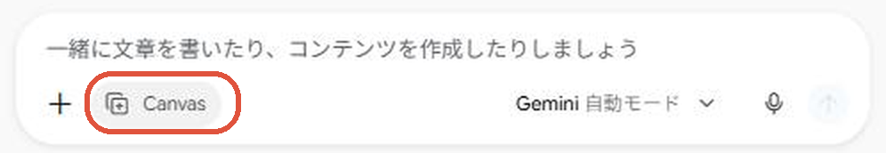
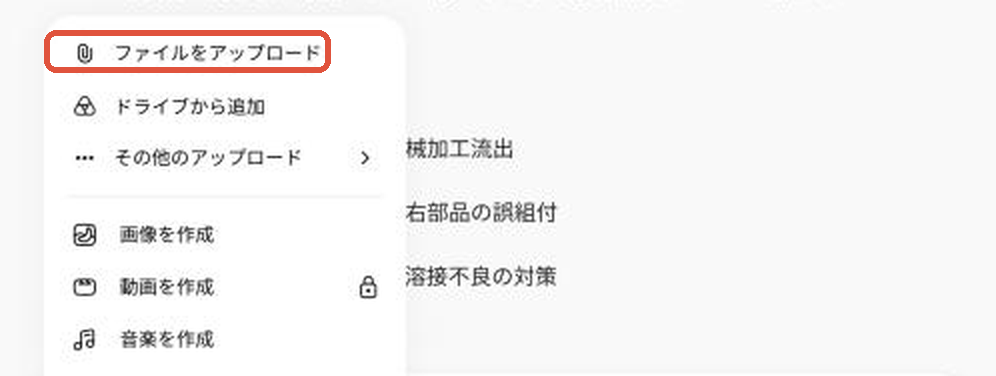
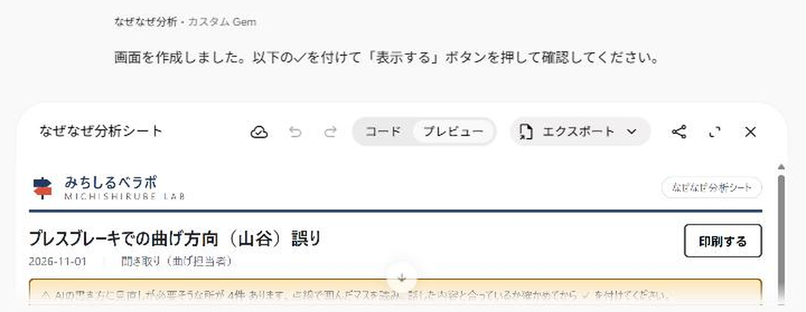
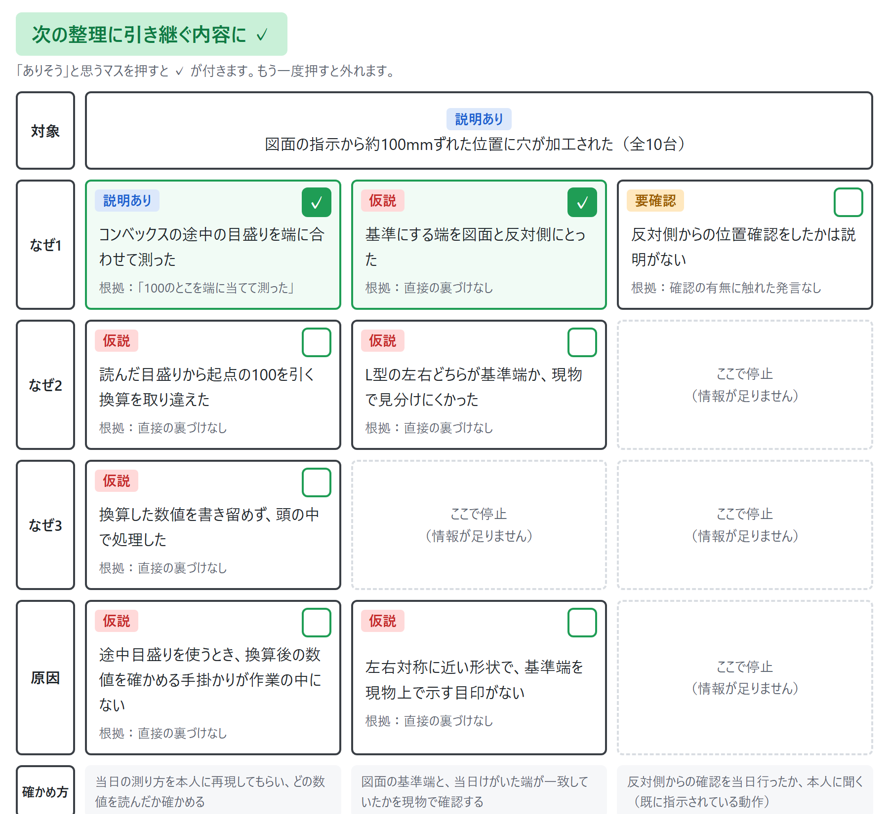
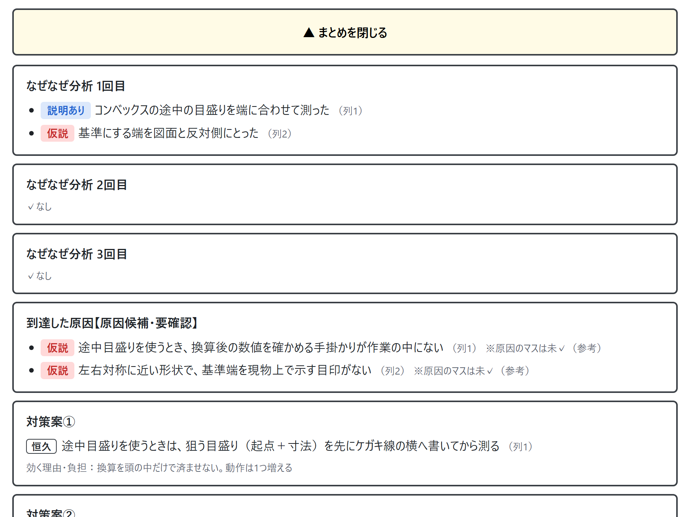

聞き取りの録音を入れて送るだけで、4M（人・設備・材料・方法）ごとの「なぜなぜ」と原因候補、対策案、品証の確認ポイントまでを、決まった形の画面にまとめます。

画面に「〇〇社 専用」と出て、御社の分析だけがまとまります。月ごとの振り返りや、似た不具合の確認に使えます。
お使いのGmailから、会社名（仮の名前でも可）を書いて Nakamichi へお送りください。
709nakamichi@gmail.com
本業と並行して個人で運営しているため、ご用意まで1週間ほどいただいています。準備ができしだい、こちらからご連絡します。お急ぎの場合は、その旨をお書きください。
※ 録音は、お使いのGeminiに送られます。社外秘の扱いは、御社の決まりに合わせてください。画面では、人の名前・お客様名・品番は「作業者」「顧客」などに置き換えて表示します。
金属加工の会社で約20年、切断・溶接・組立・機械加工の現場から、生産管理・品質保証・5S・安全衛生（第1種衛生管理者）まで経験してきた Nakamichi が、個人で作っています。
これまでの現場の経験とAIの使い方を組み合わせて、中小の町工場のみなさんと一緒に、ものづくりを盛り上げていけたらと思い、無料で公開しています。「ここが使いにくい」「こんなことにも使いたい」という声をいただければ、空いた時間に少しずつ改良していきます。
共通版は、下のリンク・QRコードから開きます。会社専用版は、Nakamichi からのご案内メール（Googleからの「共有されました」のお知らせ）にあるリンクから開きます。
開いてすぐは準備中です。入力欄の下に「Canvas」と出てから次へ進みます（数秒〜30秒ほど）。

左下の「＋」→「ファイルをアップロード」で、録音などを添付します。次のどれでも使えます。
💡 話の中で「いつ起きたか（作った日）」「いつ連絡を受けたか」も伝えてください。記録に残り、月ごとの振り返りに使えます。


① 4Mと② 不具合のボタンで、見る場所を切り替えます。各マスには印が付いています。
点線で囲まれた「要見直し」のマスは、AIが話していないことを書いたかもしれない所です。中身を確かめてから使ってください。

マスを押すと ✓ が付きます。もう一度押すと外れます。

下のボタンで、✓したマスをもとに、なぜなぜの整理・原因候補・対策案・品証の確認ポイントが表示されます。右上の「印刷する」で紙にもできます。